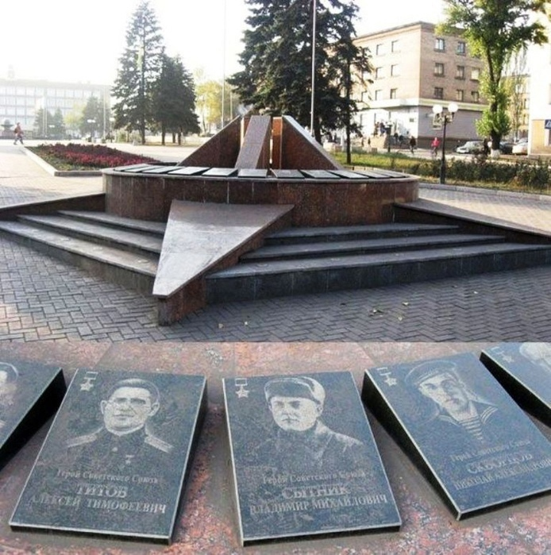

Памятник героям-летчикам
Памятник героям-летчикам находится в сквере у здания бывшего кинотеатра «Орион» по проспекту Берегового.
Следует отметить, что красной нитью в истории формирования этого сквера и проспекта им. Берегового проходит тема авиации.
Памятник Героям Советского Союза
Тысячи жителей Енакиево воевали с фашистскими оккупантами. За годы Великой Отечественной войны 31 житель города был удостоен
звания Героя Советского Союза. Все они были представлены на Аллее Славы города, которая располагалась на центральной площади
напротив горсовета.

Костёл Марии Терезы Калькутской
История костела связана с началом освоения природных богатств бескрайних диких степей, строительства рудников во II половине XIX столетия.
Грандиозное строительство требовало притока рабочих рук, квалифицированных специалистов из Западной Европы и внутренних губерний царской
России. Религиозная терпимость позволяла представителям более сотни народностей разных конфессий отправлять свои религиозные потребности.
В 50-60 годы XIX века. свыше 20 тысяч поляков и членов их семей, участников национально-освободительного движения Польши, были переселены в Донбасс.
Памятник Воинам Землякам - Металлургам
Сотни имён металлургов, ушедших на фронт и не вернувшихся домой, нанесены на мемориальные плиты.
Мемориал находится рядом с проходной Енакиевского металлургического завода
Памятник Ф.Е. Енакиеву
Памятник Ф. Енакиневу, основателю города Енакиево, открыт 4 сентября 2010 года в рамках празднования Дня города. Он установлен прямо
напротив памятника Ленину. Памятник изготовлен заслуженным художником Украины П. Антипом, который известен также как автор памятника
основателю соседней Горловки. Так же в проекте принимали участие скульптор Дмитрий Ильюхин и архитектор Ольга Верещагина. Предприниматель
Ф. Енакиев в 1895 г. основал Русско-Бельгийское металлургическое общество, после чего началось строительство металлургического завода,
вокруг которого и возник город.
Кинотеатр Украина
Кинотеатр "Украина" находится по улице Тиунова, 97 в городе Енакиево Донецкой области. Здание построено в стиле
советского неоклассицизма, по типовому проекту № 2-06-25 двухзального кинотеатра на 600 мест архитектора С. И. Якшина.
30 июля 1955 года состоялось торжественное открытие кинотеатра «Украина».